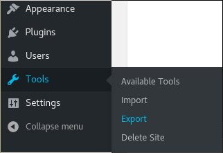
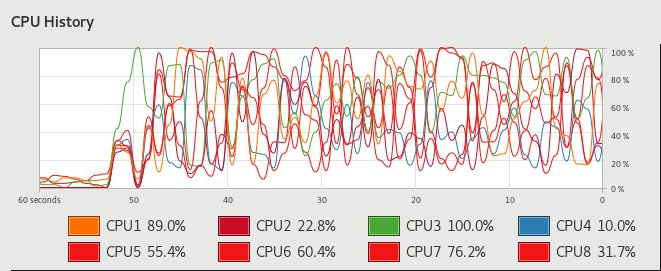

, 5 min read
Converting WordPress Export File to Hugo
Original post is here eklausmeier.goip.de/blog/2017/04-24-converting-wordpress-export-file-to-hugo.
I have written on the Hugo static site generator here. Now I have written a migration program in the Go programming language to convert from WordPress export format to Hugo format. This program wp2hugo.go is in GitHub. It can be freely downloaded and does not need any further dependencies, except, of course, Go. The Go software is in Arch Linux or Ubuntu.
To convert a blog from WordPress you have to create an export file.

If the blog is not too voluminous, one simply downloads a single XML-file which contains all posts and pages. If the blog in question is larger, then you will receive an e-mail from WordPress.com. In that e-mail you will find a link from where you can download a ZIP which contains two or more XML files in them. If you have such a ZIP-file, then unpack it, for example by using p7zip. Then run
go run wp2hugo.go XML1 XML2 ...
This will produce empty directories archetypes, data, layouts, static,
and themes. It will create a directory content which has sub-directories page, and post, possibly private. This setup is similar to hugo new. It will furthermore produce two files config.toml and attachm.txt. Converting this blog, which you are just reading, will result in the following config.toml for example:
title = "Elmar Klausmeier's Weblog"
languageCode = "en"
baseURL = "https://eklausmeier.wordpress.com"
paginate = 20
[taxonomies]
tag = "tags"
category = "categories"
archive = "archives"
[params]
description = "Computers and Programming"
File attachm.txt contains a list of all attachments, i.e., in most cases these are images. In my case this file looks like this:
https://eklausmeier.files.wordpress.com/2016/12/cablesurf-speed1.png cablesurf-speed1.png
https://eklausmeier.files.wordpress.com/2013/06/load99.png load99.png
https://eklausmeier.files.wordpress.com/2014/09/c10ktitles.jpg c10ktitles.jpg
...
It lists all files which are actually referenced in your blog. You can download them like this:
cd static
mkdir img
cd img
perl -ane '`curl $F[0] -o $F[1]\n`' ../../attachm.txt
You don't have to download the files, if you already have your images on your local machine. Program wp2hugo.go changes all your blog posts and pages so that they reference their images (attachments) in /img/, i.e., static/img/.
I have two blogs on WordPress.com:
- Elmar Klausmeier's Weblog, more than 220 posts, 4 pages
- Collected Links, almost 3,000 posts, 2 pages
Converting the first one using wp2hugo.go takes less than 2 seconds for 220 posts, the second, larger blog, takes less than 6 seconds for the 3,000 posts. These timings are on a desktop PC with an AMD octacore FX 8120 clocked at 3.1 GHz.
wp2hugo.go splits the XML export file where each post or page becomes a separate markdown file under content, additionally it handles the following specialities:
- Tags and categories
- Converts
[code]and<pre>to ‘...‘ - Converts YouTube videos to
{{< youtube ... >}} - Handling for Vimeo shortcode
[vimeo] - Handles Google maps
- Handles
$latex, posts with TeX math getmath=truein their frontmatter - Corrects corrupted code in
[code]blocks where special characters like lower than, greater than, or ampersand where erroneously transformed to HTML format by WordPress httpconverted tohttps- Draft posts in WordPress are drafts in Hugo
I experimented with the converted files and used the following themes, which showed results without too much fiddling in config.toml:
Hugo, not wp2hugo.go, is a CPU hog. When Hugo reads all 3,000 posts then all 8 cores in my machines are mostly busy.
/tmp/H: time hugo --theme=hugo-theme-bootstrap4-blog
Started building sites ...
Built site for language en:
0 draft content
0 future content
0 expired content
2904 regular pages created
11394 other pages created
0 non-page files copied
6209 paginator pages created
0 archives created
5690 tags created
1 categories created
total in 116501 ms
real 1m56.727s
user 8m5.703s
sys 0m1.877s
I.e., after 2 minutes Hugo has processed all files, but bills 8 minutes because it has used more than one core. I ran this in /tmp, so there is no actual writing to disk; /tmp is mounted as tmpfs in Arch Linux.

Currently wp2hugo.go has the following limitations:
- Password protected posts in WordPress have no password in Hugo
- Inlined TeX equations work, but displayed equations do not, e.g., On Differential Forms
- The
highlightorgutterparameters in[``code``]is passed through but needs handling with SyntaxHighlighter - When a post references to a page this link will be 404, while references to all other posts work fine
wp2hugo.go works as follows:
- Iterate over all filenames given as arguments
- Fill Go maps
config[],frontmatter[],attachm[], etc. - Find posts or pages within
item-tag - Use various regular expressions to change the body of posts and pages -- they would nicely fit into a configuration file
The larger of the two blogs has previously been migrated from del.icio.us to Collected Links using a Perl script, which generated WordPress import/export format, see Migrating from delicious.com to WordPress.
It deserves another article how to actually bring the converted blog to GitHub, GitLab, Netlify, etc.
Added 20-May-2017: This post was referenced in {static is} The New Dynamic but is now a dead link (30-Dec-2019).
Added 06-Jan-2018: On 19-Dec-2017 James Shubin used above Go program wp2hugo.go to convert his WordPress blog to Hugo. He made a number of changes, corrections, and improvements to above program. His changes are in GitHub. His new wp2hugo.go is here. I intend to incorporate his changes into above wp2hugo.go program. His new blog also allows comments.
Added 24-Jun-2018: This post referenced in Wordpress to Hugo.
Added 11-Jan-2019: This post referenced in BinaryMist Web Migration.